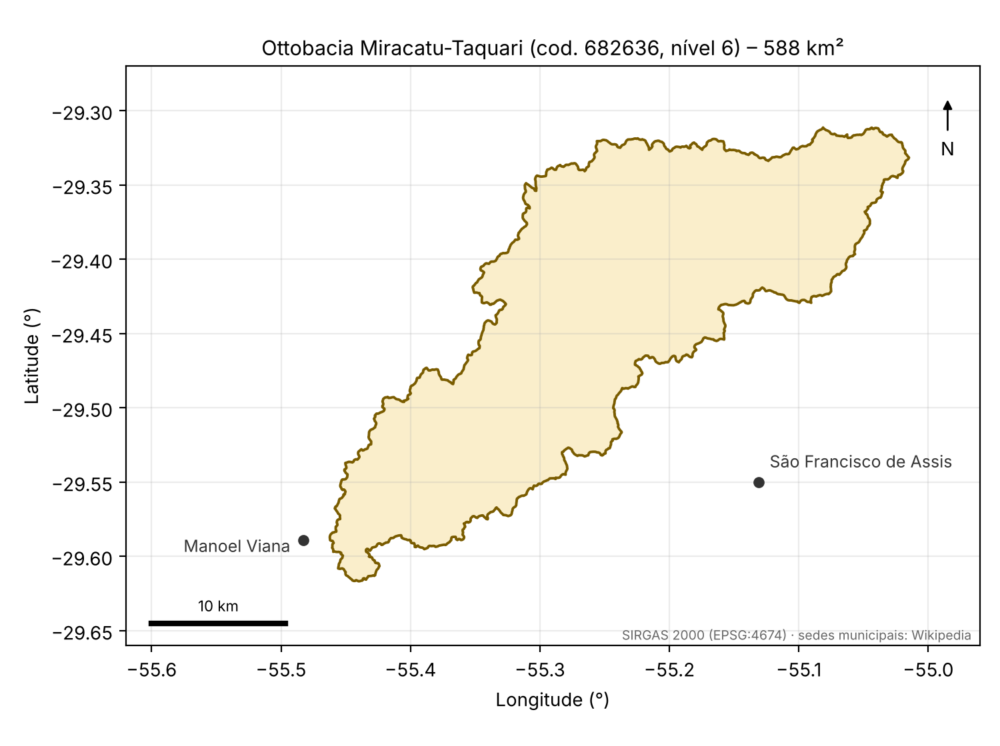
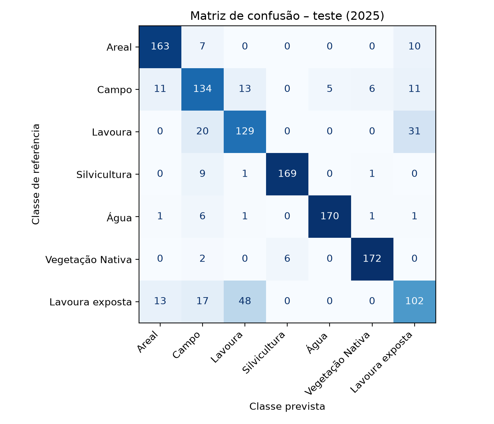

Camadas e linha do tempo
Legenda
- Areal29,47 km²
- Campo223,07 km²
- Lavoura200,79 km²
- Silvicultura34,99 km²
- Água8,33 km²
- Vegetação Nativa92,53 km²
- Outras classes do MapBiomas
Manchas de areal em contorno. Clique numa delas para ver as curvas.
Future Tech Leaders Brasil · Space Tech Bootcamp 2026
Areais da ottobacia Miracatu-Taquari2025
Mapeamento de áreas de arenização com Sentinel-2 e Random Forest · Franqueline Monback Noschang

O mapa acompanha o texto: ao rolar, ele muda de camada e de enquadramento a cada seção. Se você mexer no mapa, a condução automática pausa até a próxima seção. Para conferir o resultado, use o fundo Sentinel-2 2025, mova o período da imagem pelos bimestres (o areal fica exposto o ano todo, mas a lavoura só em parte dele) e compare lado a lado com o MapBiomas. A partir do zoom 14, as manchas de areal ganham contorno e mostram a área ao clicar.
Contexto
A arenização é o principal processo de degradação do solo no Pampa gaúcho: em substratos arenosos frágeis, a perda da vegetação forma manchas de areia exposta, os areais. Os mapeamentos existentes usam imagens de 30 m ou classes genéricas de "área não vegetada", sem separar o areal de outros solos expostos, sobretudo da lavoura em preparo de solo, que tem resposta espectral parecida numa única data.
Este projeto mapeia os areais existentes em 2025 na ottobacia Miracatu-Taquari (código 682636, nível 6 da ANA, 589 km², entre Manoel Viana e São Francisco de Assis, sudoeste do RS) com imagens Sentinel-2 a 10 m e Random Forest. A diferença em relação aos mapeamentos anteriores é usar a série do ano inteiro: o areal fica exposto quase o ano todo, e a lavoura só em parte dele.
Objetivos de Desenvolvimento Sustentável
ODS 15 – Vida Terrestre, meta 15.3: saber onde estão os areais é o primeiro passo para priorizar manejo e recuperação. ODS 2: a arenização reduz a área útil para pecuária e lavoura. ODS 13: o inventário é a linha de base para acompanhar o efeito de chuvas intensas e do vento.
Produtos
Mapa de classificação de 2025 (GeoTIFF, 10 m), polígonos de areais (shapefile), código aberto e reprodutível e este mapa web.
Este inventário faz parte de um estudo mais amplo sobre os processos de arenização nesta bacia, desenvolvido no mestrado em Geografia da UFSM.

Trabalhos relacionados
Três trabalhos orientam este projeto. Cada um resolve uma parte do problema e deixa outra em aberto, e é dessa sequência que vem o desenho do mapa.
- 1992 Suertegaray O conceito
Ao estudar os areais do sudoeste gaúcho, Suertegaray mostrou que eles não são um deserto. Em clima úmido, o que existe é a arenização, o retrabalhamento de depósitos arenosos pouco consolidados, em que a areia em movimento impede a vegetação de se fixar. O conceito define o que este mapa procura: areia exposta de forma persistente sobre esses depósitos.
O que ficou em aberto →Onde estão os areais hoje e como acompanhá-los ao longo do tempo.
- 2017 Souza e Pires O mapeamento regional
No Arroio Puitã, Souza e Pires acompanharam os areais de 1984 a 2014 com imagens Landsat e classificação por Máxima Verossimilhança, uma imagem por data. O trabalho mostra a dinâmica regional e traz um alerta: a transição entre campo e areal, de vegetação rala, aparece como solo exposto e se parece com solo em cultivo inicial.
O que ficou em aberto →Com uma única data e 30 m de resolução, o areal se confunde com a lavoura em preparo de solo.
- 2023 Rayne et al. O método
No sul do Marrocos, Rayne et al. detectaram campos degradados por desertificação com Sentinel-2, Google Earth Engine e Random Forest, com 74 a 76% de acerto na classe de interesse. Daí vêm o fluxo de trabalho deste projeto e uma referência realista do que esperar de acurácia.
O que ficou em aberto →Uma única estação do ano, em clima árido, sem a confusão com a lavoura.
- 2025 Este projeto A síntese
Este projeto aplica o método de Rayne et al. ao problema descrito por Suertegaray e por Souza e Pires, com Sentinel-2 a 10 m e a série do ano inteiro. O areal fica exposto em quase todas as cenas, a lavoura só em parte delas, e é essa diferença que separa as duas classes.
Comparação rápida
| Critério | Souza e Pires (2017) | Rayne et al. (2023) | Este projeto |
|---|---|---|---|
| Local | Arroio Puitã, RS | Oásis do sul do Marrocos | Ottobacia Miracatu-Taquari, RS |
| Sensor e resolução | Landsat, 30 m | Sentinel-2 e Sentinel-1, 10 m | Sentinel-2, 10 m |
| Tempo | 1 imagem por data (1984–2014) | mediana de jun–ago 2021 | série de 2025 inteira (87 cenas) |
| Classificador | Máxima Verossimilhança | Random Forest (GEE) | Random Forest (GEE) |
| Acurácia do alvo | — | 74–76% | F1 do Areal de 0,88 |
| Limite | transição campo–areal confundida com cultivo | uma estação só | sem verificação de campo |
Dados
| Dado | Fonte | Uso |
|---|---|---|
| Sentinel-2 L2A, reflectância de superfície, cenas de 2025 | ESA/Copernicus, via Google Earth Engine | Índices espectrais e variáveis do modelo |
| Cloud Score+ | Google, via Earth Engine | Máscara de nuvens |
| Limite da ottobacia 682636 | ANA – Base Hidrográfica Ottocodificada | Recorte da área de estudo |
| MapBiomas 10 m, Coleção 4 | MapBiomas | Apoio à amostragem, controle de qualidade e comparação |
| Mapeamento de areais do RS (2020) | SEMA-RS | Localização dos areais, controle de qualidade e comparação |
| Amostras rotuladas (polígonos) | Interpretação visual neste projeto | Treino e teste |
O MapBiomas e a SEMA-RS ajudaram a localizar os areais, mas nunca foram usados como rótulo direto: cada amostra foi conferida na imagem de alta resolução e nas seis medianas bimestrais do Sentinel-2.
Método
- ImagensTodas as cenas Sentinel-2 de 2025 sobre a bacia (87), com as nuvens removidas pelo Cloud Score+.
- Índices por cenaNDVI, BSI e NDWI, mais uma marcação de solo exposto quando o NDVI fica abaixo de 0,25, o BSI acima de 0 e o NDWI abaixo de 0.
- Variáveis anuaisSão 14 por pixel: as medianas das bandas, as estatísticas do NDVI (mínimo, médio, máximo, amplitude e desvio), o BSI e o NDWI medianos e a frequência de solo exposto no ano.
- AmostrasPolígonos desenhados em SIG e revisados um a um. Os areais passam por um controle de qualidade próprio.
- Treino e testeAs amostras foram divididas em 70% para treino e 30% para teste, sempre por grupos de polígonos vizinhos, para que áreas quase idênticas não fiquem dos dois lados. Foram 2.940 pontos de treino e 1.260 de teste.
- Random ForestOs hiperparâmetros foram escolhidos por validação cruzada espacial. A bacia foi classificada no Earth Engine, e um filtro final corrige a troca de pixels entre Silvicultura e Vegetação Nativa.
Como ler os índices
NDVI
Índice de Vegetação por Diferença NormalizadaMede o vigor da vegetação pelo contraste entre o vermelho, que as plantas absorvem, e o infravermelho próximo, que elas refletem. Vai de −1 a 1. Valores altos, acima de 0,6, indicam vegetação densa. Perto de 0,2 está a vegetação rala ou o campo seco. Perto de 0 está o solo exposto, e abaixo de 0, a água. No areal o NDVI fica baixo o ano inteiro. Na lavoura ele sobe no auge da safra e cai depois da colheita. (Rouse et al., 1974)
Ver fórmula
NDVI = (NIR − Vermelho) / (NIR + Vermelho)
NDWI
Índice de Água por Diferença NormalizadaCompara o verde e o infravermelho próximo. Fica positivo sobre a água e negativo sobre vegetação e solo. Aqui ele separa a classe Água e impede que a água seja contada como solo exposto. (McFeeters, 1996)
Ver fórmula
NDWI = (Verde − NIR) / (Verde + NIR)
BSI
Índice de Solo ExpostoCompara o infravermelho de ondas curtas e o vermelho, que o solo reflete mais, com o infravermelho próximo e o azul, que a vegetação reflete ou absorve de outro jeito. Quanto maior, mais solo à mostra. A areia clara e seca tem BSI alto. (Rikimaru et al., 2002)
Ver fórmula
BSI = ((SWIR1 + Vermelho) − (NIR + Azul)) / ((SWIR1 + Vermelho) + (NIR + Azul))
Frequência de solo exposto
Não é um índice da imagem, é uma contagem. Mostra em que fração das cenas de 2025 o pixel apareceu como solo exposto (NDVI abaixo de 0,25, BSI acima de 0 e NDWI abaixo de 0). Vai de 0, nunca exposto, a 1, exposto em todas as cenas. É a variável que melhor separa o areal da lavoura.
Ver fórmula
Frequência = cenas com solo exposto / cenas sem nuvem do pixel no ano
Valores típicos nas amostras
| Classe | NDVI médio | NDWI mediano | BSI mediano | Frequência de solo exposto |
|---|---|---|---|---|
| Areal | 0,26 | -0,49 | 0,22 | 0,50 |
| Lavoura exposta | 0,41 | -0,51 | 0,14 | 0,21 |
| Lavoura | 0,51 | -0,55 | 0,03 | 0,13 |
| Campo | 0,59 | -0,60 | -0,01 | 0,00 |
| Vegetação Nativa | 0,85 | -0,77 | -0,32 | 0,00 |
| Silvicultura | 0,85 | -0,83 | -0,41 | 0,00 |
| Água | 0,06 | -0,12 | 0,11 | 0,23 |
Mediana de cada classe nos pontos de amostra de 2025. A Lavoura exposta é uma subclasse do treino, juntada à Lavoura no mapa final.
Por que a série do ano inteiro separa areal e lavoura
Numa única data, areal e lavoura em preparo de solo são parecidos. No ano, não: o areal fica exposto em boa parte das cenas e tem NDVI baixo e estável, enquanto a lavoura alterna solo exposto e vegetação densa. Talhões expostos quase o ano todo (pousio, palhada) foram treinados como uma subclasse, Lavoura exposta, e juntados à Lavoura no mapa final. O gráfico mostra a mediana de cada classe nas amostras (barra) e o intervalo entre os quartis 25% e 75% (traço).
Clique numa aba para ver o índice correspondente no mapa, como medianas bimestrais de 2025 (a frequência de solo exposto é a mesma variável do modelo). No mapa, clique numa mancha de areal para comparar as suas curvas com as de Lavoura e Campo.
Controle de qualidade dos areais
Cada polígono de areal foi medido no próprio Sentinel-2: é núcleo de areal se ficou exposto em pelo menos metade das cenas e tem NDVI médio até 0,30. Os demais são duvidosos e foram revisados um a um. O controle de qualidade nunca filtra o teste, para não deixar só os casos fáceis e inflar a acurácia.
| Polígonos de areal nas amostras | Polígonos | Área (ha) |
|---|---|---|
| Duvidoso | 83 | 235,1 |
| Núcleo de areal | 90 | 310,2 |
Modelo
Random Forest com 100 árvores, profundidade máxima 20 e número de variáveis por divisão igual à raiz quadrada do total, escolhidos por validação cruzada espacial de 5 dobras (F1 macro de 0,838 ± 0,026). O Random Forest funciona bem com poucas centenas de polígonos e variáveis tabulares, é robusto a variáveis correlacionadas, indica a importância de cada variável e roda no próprio Earth Engine.
Depois da classificação, um filtro espacial remove o salpicado de pixels soltos: manchas de Silvicultura e de Vegetação Nativa menores que 1 ha (as duas classes são espectralmente parecidas e trocavam pixels entre si) e manchas de Água menores que 0,2 ha passam para a classe predominante ao redor. Uma mata nativa pequena só vira silvicultura se estiver dentro de um talhão, para não apagar capões reais, e o limite da Água é baixo para manter os açudes. Areal, Campo e Lavoura não são filtrados, para manter os pequenos focos de areal.
Resultados
O mapa identificou 29,47 km² de areal, 5,0% da bacia. Campo e lavoura dominam a paisagem.
Área calculada pela contagem de pixels de 10 m na bacia.
Quais variáveis mais pesam em cada classe
Importância por permutação: quanto o acerto do modelo em cada classe cai quando os valores de uma variável são embaralhados. Variáveis correlacionadas dividem a importância entre si, por isso valores baixos não significam que a variável seja inútil.
Validação
Acurácia global de 0,90 e F1 macro de 0,90 nos pontos de teste (do mapa do Earth Engine), que ficam em polígonos separados dos de treino. O F1 do Areal é 0,88. A classe mais difícil é o Campo, que se confunde com a lavoura e com areais revegetados.
Os pontos de teste vêm de áreas típicas de cada classe e têm o mesmo número por classe. A acurácia do mapa inteiro, que inclui bordas e pixels mistos e classes de tamanhos muito diferentes, tende a ser menor.

A lição do processo
A primeira versão do mapa tinha mais de 90% de acurácia no teste, mas marcava 19% da bacia como areal. A comparação com o MapBiomas revelou o excesso, e a revisão das amostras (areais duvidosos reclassificados e amostras de Lavoura exposta) reduziu o areal para 5,0% da bacia. Acurácia alta no teste não garante um bom mapa: o teste mede o modelo em amostras típicas, e a comparação com referências mede o mapa inteiro.
Comparação com o MapBiomas e a SEMA-RS
A concordância geral com o MapBiomas 10 m é de 79,3% da área da bacia. No Areal, a concordância é menor, e parte da diferença vem de como cada base classifica: o MapBiomas classifica o uso da terra (um talhão inteiro é lavoura, mesmo com uma mancha de areia dentro) e a SEMA-RS mapeou os areais consolidados, em escala mais grosseira. Este mapa classifica a cobertura pixel a pixel, a 10 m. Nesta seção, o mapa mostra de perto a maior mancha de areal sobre lavoura do MapBiomas (63,7 ha), lado a lado com o MapBiomas.
Onde está o Areal deste mapa, segundo o MapBiomas
- Praia, duna e areal46%
- Outras áreas não vegetadas7%
- Mosaico de usos10%
- Lavoura28%
- Campo e pastagem4%
- Floresta e silvicultura4%
- Água e áreas alagadas<1%
Dos 29,47 km² de Areal deste mapa, 13,59 km² também são areal no MapBiomas. Outros 8,22 km² estão em talhões que o MapBiomas classifica como lavoura, 2,17 km² em outras áreas não vegetadas e 3,06 km² em mosaico de usos, classes em que o MapBiomas não define o tipo de solo exposto.
A conferência visual de 30 a 50 manchas em conflito com a lavoura do MapBiomas mostrou solo arenoso exposto na maior parte delas.
Os solos do substrato arenoso da bacia são "muito frágeis e altamente suceptíveis [sic] à erosão hídrica" (Suertegaray, 2011, p. 69): quando a cobertura é removida, a "expansão lateral e remontante das ravinas e voçorocas, promove a formação do areal propriamente dito" (idem), e a "constante mobilidade dos sedimentos" dificulta a volta da vegetação (Suertegaray, 2011, p. 62). Por isso, as manchas de solo arenoso exposto encontradas dentro de lavouras são áreas fragilizadas, com possíveis focos de arenização. Parte ainda pode ser manejo (pousio, preparo do solo), e a confirmação em campo é o próximo passo.
A literatura sustenta essa leitura. A arenização é o "retrabalhamento de depósitos areníticos (pouco consolidados) ou arenosos (não consolidados)" (Suertegaray, 2011, p. 62), e "este processo poderá ser desencadeado por agentes naturais ou atividades humanas" (Suertegaray, 2011, p. 69). Numa área piloto entre São Francisco de Assis e Manoel Viana, a mesma região desta bacia, na frente de expansão da soja, a análise multitemporal registrou aumento de 47,52 ha de areais em 25 anos, resultados que "indicam o surgimento de novas manchas de areia (areais)" (Suertegaray, Guasselli e Franz, 1995 apud Suertegaray, 2011, p. 69). Ravinas e sulcos também podem resultar do "uso de maquinaria pesada na atividade agrícola" (Suertegaray, 2011, p. 64).
Areal deste mapa e areais da SEMA-RS
- Dentro dos areais da SEMA38%
- Fora dos areais da SEMA62%
Como este mapa classifica os 28,36 km² de areais da SEMA-RS
- Areal40%
- Campo39%
- Lavoura19%
- Silvicultura1%
- Água<1%
- Vegetação Nativa<1%
Parte dos areais da SEMA (mapeamento de 2020) aparece como Campo em 2025: são áreas revegetadas desde o mapeamento ou areais com cobertura rala. A conferência visual separa os dois casos.
Matriz de concordância
Cada linha é uma classe deste mapa, e as colunas mostram como a mesma área aparece no MapBiomas (% da linha). Passe o mouse para ver a área em km².
| Areal | Campo | Lavoura | Silvicultura | Água | Vegetação Nativa | Outras | |
|---|---|---|---|---|---|---|---|
| Areal | 46% | 4% | 28% | 4% | 0% | 0% | 18% |
| Campo | 3% | 82% | 3% | 1% | 0% | 3% | 7% |
| Lavoura | 1% | 11% | 76% | 0% | 0% | 0% | 11% |
| Silvicultura | 0% | 1% | 2% | 94% | 0% | 2% | 0% |
| Água | 2% | 22% | 7% | 6% | 29% | 12% | 21% |
| Vegetação Nativa | 0% | 5% | 0% | 0% | 0% | 91% | 4% |
Limitações e próximos passos
- A acurácia vem de amostras em áreas típicas de cada classe, sem verificação de campo. Uma amostra aleatória estratificada sobre o mapa permitiria estimar a acurácia sem esse viés e corrigir a área por classe (Olofsson et al., 2014).
- A área é a contagem de pixels e ainda não tem intervalo de confiança.
- Talhões expostos quase o ano todo ainda podem se parecer com areal. Variáveis de textura ou classificação por objetos (segmentação) podem reduzir essa confusão.
- O Campo é a classe com menor acerto e se confunde com lavoura e com areais revegetados.
- A Água ainda ocupa mais área que no MapBiomas: quase toda a água real é encontrada, mas banhados, várzeas e sombras de mata ciliar também aparecem como água. Uma variável de frequência de água (fração das cenas com água) separaria os corpos d'água permanentes das áreas úmidas temporárias.
- A resolução de 10–20 m não captura areais muito pequenos ou estreitos, e areais sob silvicultura não aparecem.
- O mapa cobre um único ano. Aplicar o mesmo fluxo a anos anteriores permitiria medir a expansão dos areais.
- Integrar o inventário ao estudo dos processos de arenização da bacia, em desenvolvimento no mestrado em Geografia da UFSM.
Referências
- MAPBIOMAS. Pampa – Appendix, ATBD Collection 11 e MapBiomas 10 m Collection 4. Disponível em: brasil.mapbiomas.org.
- McFEETERS, S. K. The use of the Normalized Difference Water Index (NDWI) in the delineation of open water features. International Journal of Remote Sensing, v. 17, n. 7, p. 1425–1432, 1996.
- OLOFSSON, P. et al. Good practices for estimating area and assessing accuracy of land change. Remote Sensing of Environment, v. 148, p. 42–57, 2014. DOI: 10.1016/j.rse.2014.02.015.
- RAYNE, L. et al. Detecting desertification in the ancient oases of southern Morocco. Scientific Reports, v. 13, 2023. DOI: 10.1038/s41598-023-46319-1.
- RIKIMARU, A.; ROY, P. S.; MIYATAKE, S. Tropical forest cover density mapping. Tropical Ecology, v. 43, n. 1, p. 39–47, 2002.
- RIO GRANDE DO SUL. Secretaria do Meio Ambiente e Infraestrutura (SEMA). Mapeamento de areais do Rio Grande do Sul. 2020. Disponível em: https://sema.rs.gov.br/areais.
- ROUSE, J. W. et al. Monitoring vegetation systems in the Great Plains with ERTS. In: Third ERTS Symposium, NASA SP-351, p. 309–317, 1974.
- SOUZA, A. C.; PIRES, C. A. F. Dinâmica da arenização na bacia hidrográfica do Arroio Puitã, oeste do RS, através do mapeamento multitemporal no período de 1984 a 2014. Revista Brasileira de Geomorfologia, v. 18, n. 1, p. 185–196, 2017. DOI: 10.20502/rbg.v18i1.1051.
- SUERTEGARAY, D. M. A. Deserto Grande do Sul: controvérsia. Porto Alegre: Editora da UFRGS, 1992.
- SUERTEGARAY, D. M. A. Erosão nos campos sulinos: arenização no sudoeste do Rio Grande do Sul. Revista Brasileira de Geomorfologia, v. 12, n. 3, p. 61–74, 2011.
Créditos
Autora: Franqueline Monback Noschang. Professor ao longo do curso: Emanuel Goulart. Future Tech Leaders Brasil, Agência Espacial Brasileira (AEB), SDG AI Lab e UNDP/ICPSD.
Agradecimentos ao Prof. Romário Trentin, orientador do mestrado, como referência e pela integração deste estudo à pesquisa sobre arenização, e a Marco Antônio da Rosa Soares, pelo apoio ao projeto.
Parte do código e da revisão do texto teve apoio de IA (Claude, Anthropic), mas as decisões de método, a coleta e a conferência das amostras são da autora.